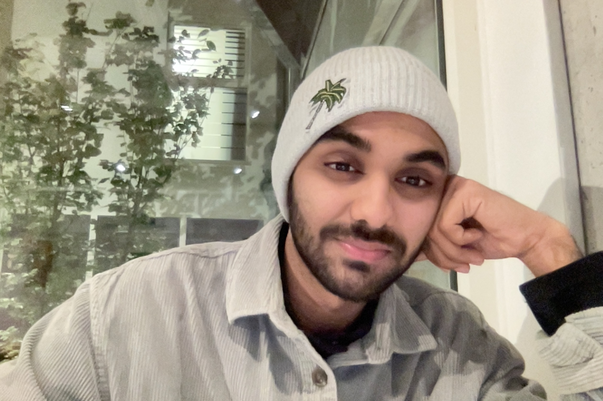

In brief
Hi, I’m Ritwik
I play with inks and paints, threads and needles, bugs and python(s), and whatever I can get my hands on to rescue. The objective is to create more than I consume.
We'll work well together if you ask difficult questions (I might not have the answer yet, but I will enjoy looking for it).
Amsterdam, NL
